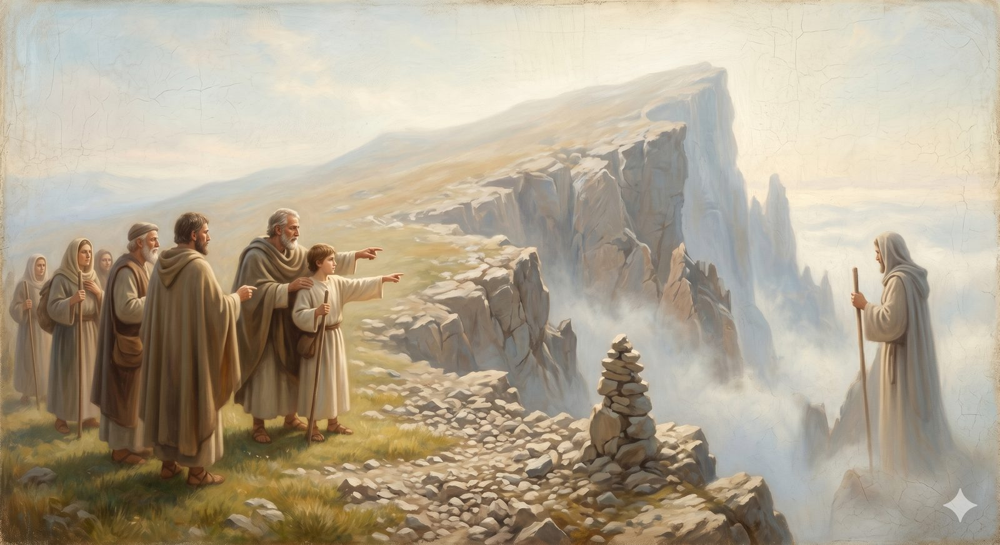

Hill Error: Old Heresies, New Labels
The mountain the shepherds warn about — the counterfeits of the faith, the real questions beneath them, and how to know one when it comes.
"Beloved, do not believe every spirit, but test the spirits to see whether they are from God." 1 John 4:1 (ESV)
Among the high places the shepherds show the pilgrims, one is a mountain called Error, whose far side is a sheer and broken cliff. They lead Christian and Hopeful close to the edge and let them look down, where the bodies of those who fell lie dashed at the bottom — pilgrims, the shepherds explain, who were destroyed by listening to false teaching and following it over the edge. It is the most sobering exhibit in the high country, and it is given for a reason: from these heights you can finally see the counterfeits clearly enough to name them.
Remember the lesson of the mountains themselves: heresy is almost never a lie invented from nothing. It is, nearly always, a real biblical truth pulled out of balance — one good emphasis stretched until it crowds out everything around it. And the people who first fell for these errors were mostly not villains; they were trying to protect something true, and went wrong in the resolving, not in the asking. So what follows is not a heresy-hunting kit. It is pattern recognition — the ability to see a familiar shape arriving in unfamiliar clothes, and to ask the right question before conclusions harden. For each, we will name what it claimed, the real concern underneath it, where it broke, how the church answered, and the clothes it wears today.
Notice, too, how often the answer turns out to be a creed. Several of these are the very battles the armory was forged in: the church did not invent the Nicene or the Chalcedonian formulas out of thin air, but hammered them out against exactly these errors. The creeds are the fences along the top of this cliff.
Counterfeit 1Arianism
“Jesus was the greatest created being — but still created”
In the early fourth century a gifted and popular teacher named Arius pressed a tidy claim: the Son, however exalted, had a beginning. “There was when he was not.” Jesus was the highest of all beings, divine in some grand sense — but still a creature, made by the Father, not eternal. Behind this was a real and worthy concern: how can there be one God if both Father and Son are God? Arius was guarding the fierce monotheism of the Hebrew Scriptures, and that instinct is right. His mistake was the resolution — protecting God's oneness by quietly demoting the Son into the ranks of the created.
But if Jesus is not fully God, the whole rescue unravels. A creature, however magnificent, cannot reconcile us to God; only God can do that. And worship offered to a creature is idolatry. The church's answer at Nicaea was a single Greek word the Arians could not bring themselves to sign: homoousios — “of one substance” with the Father. Not similar substance. The same. That one word carried the gospel.
It comes back in modern dress. The Jehovah's Witnesses teach plainly that Jesus is the first and greatest of God's creations, and render John 1:1 as “the Word was a god” — a move Arius would recognize at once. (Mormon theology, by contrast, is genuinely its own system rather than relabeled Arianism, though it shares the rejection of Nicene substance.) And the most common form needs no sect at all: the gentle, respectable idea that “Jesus was the greatest teacher and moral example who ever lived” is simply Arianism with the theology removed — Jesus as the top of a human scale, rather than God himself stepping into our world.
Counterfeit 2Pelagianism
“You can do this if you try hard enough”
A learned and morally serious British monk named Pelagius arrived in Rome around 380 and was appalled by Christians using grace as an excuse for laziness. His remedy was to insist on the full power of the human will: we can choose good and obey God by our own natural capacity. Grace helps — it clarifies the path, gives us Christ as a fine example — but it is not strictly necessary, and Adam's sin damaged Adam, not us. The concern underneath was real: if people have no genuine ability to choose, how can God hold them responsible? Human agency matters, and the moral passivity Pelagius saw was a true problem.
But it badly misreads how deep the damage goes. Paul's account of the inner life — “I do not do what I want, but I do the very thing I hate” — describes not a healthy will needing better information, but a will in bondage, complicit in its own captivity. If grace is merely a boost to an already-capable agent, then the Cross is not a rescue; it is a tutorial. Augustine spent his greatest energy answering Pelagius, and the church condemned the teaching at Carthage in 418 — and its softer cousin, the idea that we take the first step and grace then cooperates, at Orange in 529. The drawing of God comes first, before any movement of ours toward him.
Today it is everywhere, usually without the name. It is the quiet default religion the sociologists call moralistic therapeutic deism — God exists, wants us to be good and happy, and helps those who make an effort. It is self-help Christianity, where Scripture is mainly motivation and Jesus mainly a model. It is the bumper-sticker creed “God helps those who help themselves” — not in the Bible, and a sentence Pelagius would have been glad to sign.
Counterfeit 3Gnosticism
“The real truth is hidden, and only some people have it”
Gnosticism was less a single movement than a family of teachings in the first three centuries, but its shape is consistent: the material world is evil or deeply inferior, made by a lesser deity; the soul is a divine spark trapped in matter; and salvation comes through gnosis, secret spiritual knowledge, rather than through faith, history, or bodily resurrection. The concern beneath it is genuine — why is the world so broken if a good God made it? — and so is the hunger it feeds, the sense that there must be more than what is offered to everyone in plain view.
But it can only be held by rejecting things the gospel will not surrender: the goodness of creation (“God saw that it was good”), the incarnation (“the Word became flesh” — not borrowed a costume of it), and the resurrection of the body. And it always builds a two-tier church — insiders with the hidden knowledge, outsiders without — which is exactly the dividing wall the gospel tears down. Irenaeus answered it in the second century with a clean principle: the God who made the world is the same God who redeems it, and salvation is the rescue of material people, not their escape from matter.
Its modern forms are easy to spot once you know the shape. Most New Age spirituality is Gnostic to the core — matter as illusion, a divine self to be unlocked, special teachers granting higher truth. The prosperity gospel's tier of “revelation knowledge,” available only through the anointed teacher, is the same structure. So is any reading of Scripture that always finds a hidden meaning contradicting the plain one and dismisses the plain sense as primitive. And the casual “I don't need the church, I have my own private connection,” while not always Gnostic, rhymes with it whenever private experience is set above the community and the text.
Counterfeit 4Marcionism
“The God of the Old Testament is a different God”
Marcion, a wealthy and influential figure in second-century Rome, taught that the God of the Old Testament — wrathful, demanding, violent — is a different and lesser deity than the loving Father of Jesus. The two Testaments describe two Gods; the Old should be discarded, and even the New purged of its Jewish elements. He produced the first attempt at a Christian canon: a trimmed Luke and ten of Paul's letters, with the connections to the Hebrew God cut out. And the question driving him is one every honest reader of Scripture meets: how do the hard passages of the Old Testament — the commanded slaughters, the imprecatory psalms, the judgment oracles — square with the God revealed in Jesus? That is real difficulty, not a manufactured one.
Marcion's answer is the nuclear option: declare the difficult God a different, inferior God altogether. But this requires dismembering Scripture and ignoring Jesus himself, who repeatedly affirmed the Hebrew Bible as speaking of him — opening the Scriptures to show how Moses, the Prophets, and the Psalms all pointed forward. It also makes the incarnation incoherent: if the Creator is not the Father of Jesus, then the claim that God entered his own creation to redeem it simply collapses. The church's insistence on keeping the Old Testament as Christian Scripture was one of its earliest and most decisive acts.
The modern version rarely declares two Gods outright. It shows up as a functional embarrassment about the Old Testament — the God of Israel quietly set aside as primitive, “the God of the New Testament” preferred as if he were a different and nicer character, the hard texts not wrestled with but disowned. The instinct is understandable. The solution remains Marcion's, and it still cuts the gospel in half.
Counterfeit 5Docetism
“Jesus only seemed to be human”
From the Greek dokein, “to seem.” Docetism held that Jesus was fully divine but only appeared to have a human body — the hunger, the suffering, the death were appearances, not realities, because (so the thinking went) a truly divine being could not stoop to the indignities of real flesh. The incarnation was a kind of divine costume rather than a genuine descent. The pressure behind it was philosophical and real: how can God, who is beyond suffering, truly become a body that bleeds and dies? To a Greek world that treated matter as inferior, the idea was a scandal, and Docetism protected God's dignity — at the cost of the incarnation's reality.
But if Jesus only seemed to suffer, the atonement is theater, and if his body was not real, neither was the resurrection. The first letter of John seems written partly against this very error: “every spirit that does not confess that Jesus Christ has come in the flesh is not from God.” And the great pastoral comfort of Hebrews — that we have a high priest who was tempted in every way as we are — becomes a decorative line rather than an anchor, unless his humanity was genuine. The church's most precise answer was the Chalcedonian Definition: fully God and fully man, in one person, without mixture, confusion, separation, or division.
It survives wherever Jesus is treated, in practice, as so divine that his human experience stops mattering — where his temptation was not really temptation, his agony in Gethsemane merely a lesson, his questions in the Gospels only performances because “he knew everything all along.” Each is a quiet denial of the humanity that makes him able to stand in our place and sympathize with our weakness.
Counterfeit 6Modalism
“Father, Son, and Spirit are just three names for the same person”
Also called Sabellianism, Modalism teaches that God is one person who appears in three different modes at different times — Father in creation, Son in the incarnation, Spirit after Pentecost: one actor, three costumes. Its concern is the most understandable of all: how can Christians claim to be monotheists while worshiping Father, Son, and Spirit? Modalism solves the arithmetic by collapsing three into one, and it arises constantly, often in sincere lay preaching, by people who have never heard it has a name.
But it cannot account for the moments where the three are present at once and distinct. At Jesus' baptism the Son stands in the Jordan, the Spirit descends as a dove, and the Father speaks from heaven — three at once, not one person switching costumes mid-scene. The relational language of John's Gospel breaks down the same way: “I will send the Helper,” “the Father is greater than I,” “the Father and I are one” — every line requires a real distinction between the one speaking and the one spoken of. The church's vocabulary was built precisely to hold this: one ousia (being), three hypostases (persons). One what; three whos. The Nicene Creed steers carefully between Arianism on one side (too separate) and Modalism on the other (too merged).
Its largest modern form is Oneness Pentecostalism, which explicitly teaches it and baptizes in Jesus' name alone — a sizable, sincere movement of people who arrived there through real engagement with the book of Acts, and who deserve the same respectful engagement as any tradition that takes Scripture seriously. But the most common appearance is the well-meant sermon illustration — God is “like water, ice, and steam,” or “like one man who is father, son, and husband” — each of which, however innocently offered, describes Modalism rather than the Trinity.
Counterfeit 7The Prosperity Gospel
“Faithfulness produces wealth, health, and success”
Unlike the others, this is not a second-century movement condemned by a council; it is included because it is the most widespread doctrinal distortion affecting ordinary Christians in the Western church today, and because it draws on several of the older errors at once. A pastoral word comes first, though: the question it answers — does God care about my poverty, my sickness, my hunger? — is real and urgent, and many who embrace it are not the credulous audiences of televangelists but poor communities finding genuine hope in a framework that takes their material suffering seriously. The critique below is aimed at the teaching, not at the people it has given hope to. They deserve better answers, not contempt.
The teaching holds that God's will for believers is reliably material — prosperity, health, success — produced by faith, positive confession, and giving (often to the ministry), so that suffering and poverty become signs of insufficient faith. See how it braids the older errors together: a Gnostic tier of special revelation held by the anointed teacher; a Pelagian mechanism in which the believer's technique obligates God to respond, grace quietly replaced by a system one operates; a Marcionite handling of Scripture that transfers Israel's land-and-cattle promises straight to the believer's bank account while explaining away every text about suffering; and a Docetic Jesus, all crown and no cross.
It is answered best not with theory but with lives. Set it beside Paul's own résumé — shipwrecked, beaten, hungry, imprisoned. Set it beside the saints of Hebrews 11, commended for their faith, who received not rescue but destitution, torture, and death. Set it beside Jesus in Gethsemane, asking that the cup be taken away. Then ask what account of faith makes these the failures, and a comfortable modern teacher the success.
Named, not fully treatedTwo more, worth knowing
Two further errors are worth recognizing by name, especially because they are the mirror-image temptations about the person of Christ — the same questions the Chalcedonian Definition in the armory was written to settle. Nestorianism so sharply separated Christ's divine and human natures that they became, in effect, two persons sharing a body; it was condemned at Ephesus in 431. Its modern echo is any teaching that splits Jesus into a “human side” and a “divine side” as if they were two subjects. Eutychianism (or Monophysitism) is the opposite error — collapsing the two natures into one, the divine absorbing the human; it was condemned at Chalcedon in 451. It is worth knowing that this remains a living point of division with several ancient churches — the Coptic, Ethiopian, and Armenian — and that careful scholarship has questioned how much of the divide was ever more than a quarrel over words. Between these two ditches, Chalcedon walks the narrow path: two natures, one person.
A closing cautionThe label is the start of a conversation
The history of these errors and the church's answers is not, at bottom, a story of paranoia or power. It is a story of people who loved God enough to fight — sometimes at great cost, sometimes in exile, sometimes against the majority — to say something true about him. Every creed along the cliff-edge is a gift from those people, received rightly only when we understand what it cost and what it carries.
Which means this knowledge can be badly misused. To call someone a Pelagian or a Gnostic in the heat of a disagreement, as a way of ending the conversation, is to turn a pastoral tool into a weapon — and usually to misuse it, since most people who drift toward these patterns are doing exactly what their ancient forerunners did: trying to protect something real. The label is not a verdict to pronounce over a person. It is the beginning of a better conversation: here is a pattern I recognize; here is the true thing it is trying to guard; here is where the church found it went wrong; here is the question that might open it back up. That is the shepherds' work — pointing out the cliff so that pilgrims do not go over it — and it is done in love, or it is not done rightly at all.
The label is not a stone to throw. It is a map of where the cliff is.
The perils of this slope, up close
Arianism
The Son demoted to a creature — the oldest counterfeit, and the most persistent. Its concern, its refutation, and where it walks today.
Open nowPelagianism
Saving ourselves by effort — the most flattering error, and why it leaves you alone on a slope no willpower can climb.
Open nowGnosticism
Salvation by secret knowledge for an inner circle — against a gospel that is public, bodily, and for everyone.
Open nowThe Rest of the Bestiary
Marcionism, Docetism, Modalism, the two-natures errors, Socinianism, open theism, and the modern remaking of God in our own image.
Open nowThe shepherds lead the pilgrims back from the edge of Mount Error and set them again on the path through the high country. The views here are long and the air is clear — but the road does not stay on the heights forever. Ahead lies a gentler, more dangerous country, where the threat is not a cliff but a sleepiness that steals over the soul. First, though, the shepherds have one more height to show — a sobering one.